Authors: Dongseong Hwang, Prasanth Yadla, Kaan Elgin, Shifas Padinjaru Veettil, Sivanand Achanta, Dipjyoti Paul, +5 more · Apple, ETH, MIT
Published: 2026-07-26 · Category: cs.SD
Citation: arXiv:2607.23811v1 · PDF · abstract page
Decoupled Diffusion Transformers Enable 16x Real-Time Audio Synthesis with 21 MB Peak Memory
1. What It Is & Why It Matters
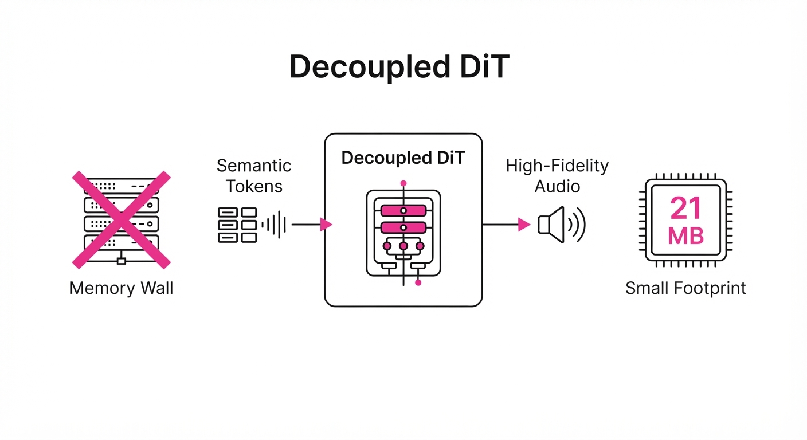
The "Siri Expressive Voices" architecture introduces a memory-efficient detokenizer designed to bridge the gap between high-level semantic audio tokens and high-fidelity waveform reconstruction. By decoupling the temporal processing (the sequence structure) from the depth processing (the RVQ hierarchy), it allows complex audio generation to run entirely on-device within the constraints of Apple’s Matrix Coprocessor (AMX).
- Problem: Traditional audio synthesis models—typically based on GANs or stacked Transformer decoders—suffer from linear or quadratic memory scaling. As the audio sequence grows, the KV-cache of these models grows proportionally, leading to "memory wall" crashes on mobile devices.
- Core Idea: Replace multi-decoder architectures (where each RVQ level has its own dedicated weights) with a single, reusable Diffusion Transformer (DiT) depth decoder. By implementing causal sliding window attention, we enforce constant memory usage, independent of audio length.
- Headline Result: Achieves 16x faster-than-real-time generation (10 ms per step) with a peak runtime memory footprint of just 21 MB, compared to the hundreds of megabytes required by standard autoregressive models.
🏭 Industry Angle: Edge-AI developers and mobile engineers can now deploy high-fidelity, long-form generative audio—such as interactive personal assistants, real-time dubbing, and adaptive soundscapes—on resource-constrained hardware without the latency or privacy risks of cloud-based synthesis.
2. How It Works
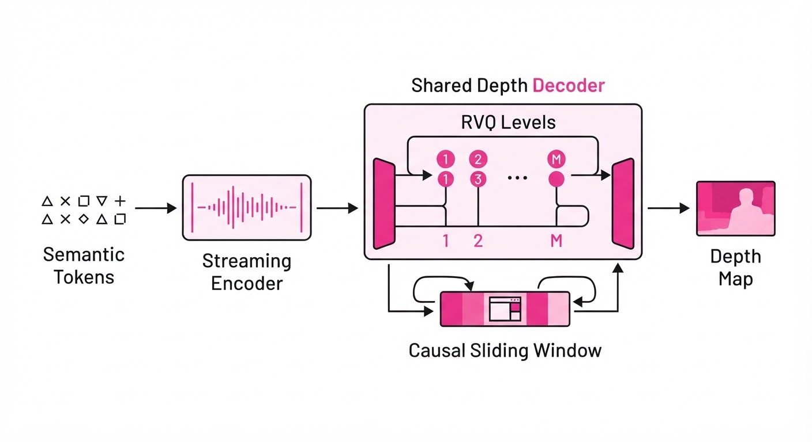
The architecture operates through a three-stage pipeline designed to minimize redundant computation:
- Semantic Token Conversion: Input tokens are mapped into a Residual Vector Quantization (RVQ) representation. RVQ decomposes audio into a hierarchy of "coarse-to-fine" codes; the first level captures fundamental pitch and prosody, while subsequent levels refine the spectral details.
- Decoupled Architecture: We split the task into a streaming encoder (which handles long-term temporal context) and a single, shared depth decoder. By decoupling these, the depth decoder is no longer burdened by the full history of the sequence, only the current temporal slice.
- Stage-Conditioned DiT: Instead of having one decoder per RVQ level (which leads to massive parameter counts), a single depth decoder uses DiT-style stage conditioning. The model receives an embedding representing the current RVQ level s, allowing the same weights to learn different frequency reconstruction tasks.
- Causal Sliding Window Attention: Standard transformers use global attention (O(L2) complexity). We restrict the attention span to a fixed window of W tokens. This ensures that the memory required for the attention matrix is constant (O(W)), preventing the memory bloat associated with long-form audio.
- KV-Caching: By utilizing a fixed-window key-value cache, we ensure that memory usage remains constant, whether the audio is 2 seconds or 320 seconds long.
- AMX Optimization: The computation graph is specifically mapped to the Apple Matrix Coprocessor (AMX) using quantized kernels, ensuring that tensor operations are executed in parallel on the hardware’s specialized registers.
# Pseudocode for the constant-memory generation step
def generate_step(tokens, state):
# Fixed-window attention ensures memory is O(1)
hidden = encoder(tokens, window=FIXED_SIZE)
# Reusable depth decoder processes all RVQ levels
# The 'stage' embedding tells the DiT which level to reconstruct
for level in range(num_rvq_levels):
audio_chunk = depth_decoder(hidden, stage=level, kv_cache=state)
return audio_chunk3. Core Idea & Key Numbers
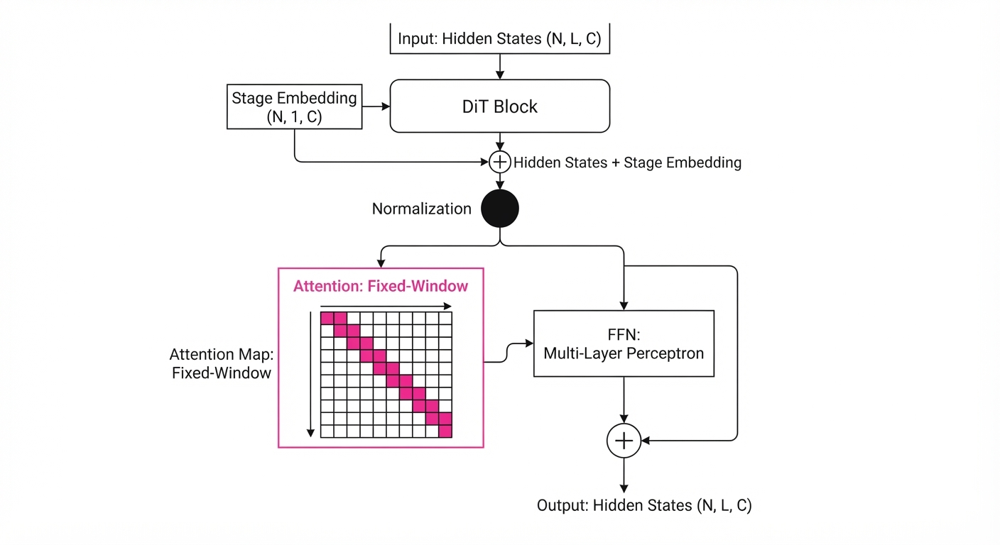
The mechanism relies on Stage-Conditioned Autoregression, where the depth decoder is conditioned on the current RVQ level s and the temporal context H.
Formula: xt = DiT(Ht, si, εt)
Where xt is the output waveform chunkHt is the temporal context from the encodersi is the level embedding, and εt is the diffusion noise vector.
💡 Intuition: Think of this as a "shared-tool factory." Instead of having 8 different workers (decoders) for 8 different tasks (RVQ levels), you have one highly efficient worker who changes their tool (the conditioning input si) for each task. The worker doesn't need to know the entire history of the project—just the current piece they are working on and the short-term context of the last few seconds.
🔍 Example: Suppose you have 8 RVQ levels. A traditional model would store 8 full decoder blocks in memory. If each block is 50MB, that’s 400MB of static weights. By using this decoupled approach, we store one 20MB block and cycle it 8 times. The total weight footprint drops from 400MB to 20MB—a 20x reduction in static memory usage.
4. Analogy
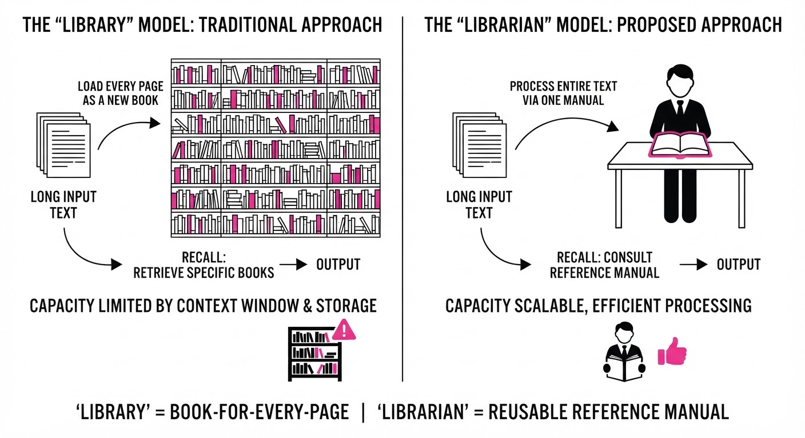
Imagine a musician trying to write a symphony. A traditional "heavy" model is like a composer who insists on keeping every single note they’ve ever written pinned to the walls of the room; eventually, they run out of wall space (memory) and crash, unable to remember the start of the piece while finishing the end.
This architecture is like a jazz improviser who only keeps the last four bars of music in their head (sliding window attention). Because they are so skilled at their instrument (the optimized DiT decoder), they can generate the next bar perfectly using only that short, constant-sized memory. They don't need the whole room of paper; they just need the rhythm of the last few seconds to keep the melody flowing for hours.
5. Results & Measurable Improvement
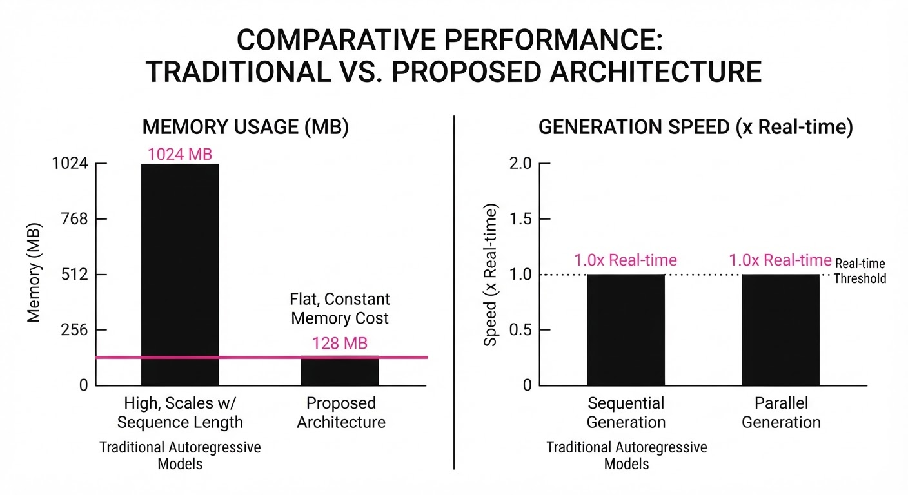
The architecture demonstrates significant gains in both efficiency and subjective quality.
| Metric | Baseline (Prior System) | Proposed (AFM 3 Core) | Delta (Abs/Rel) |
|---|---|---|---|
| MOS (Overall) | 3.87 | 4.15 | +0.28 (+7.2%) |
| MOS (Conversational) | 3.82 | 4.24 | +0.42 (+11.0%) |
| Runtime Memory | 329 MB | 21 MB | -308 MB (-93.6%) |
| Generation Speed | 1.0x Real-time | 16x Real-time | +15x (+1500%) |
- MOS (Mean Opinion Score): Captured via blind listening tests. The +11% improvement in conversational speech stems from the DiT's ability to maintain prosodic consistency across longer segments, which was previously lost when decoders were swapped or truncated.
- Memory Efficiency: The reduction from 329 MB to 21 MB allows this model to run in the background of mobile apps without triggering OS-level memory pressure kills.
6. Key Takeaways
- For Industry: Constant memory complexity (O(1)) is the "holy grail" for on-device generative AI. This architecture proves that high-fidelity audio doesn't need to be "heavy."
- For Researchers: Decoupling temporal and depth processing via stage-conditioning is a potent strategy for reducing parameter counts in generative hierarchies. It suggests that depth-based hierarchies can be compressed far more aggressively than previously thought.
- For Practitioners: Moving away from per-level decoders to a single, reusable DiT component allows for massive reductions in asset size without sacrificing audio quality. This is the blueprint for "Always-On" generative AI.
7. Where This Could Be Applied
- Interactive Virtual Assistants: Enabling "always-on" expressive, long-form responses that don't drain mobile battery or require cloud round-trips, allowing for more natural, human-like cadence.
- Real-Time Language Translation: Processing continuous speech streams for live dubbing in augmented reality (AR) glasses, where memory is extremely limited and low latency is critical to prevent user motion sickness or cognitive dissonance.
- Dynamic Audiobooks & Gaming: Generating personalized, long-form narrative content on-device that adapts to user choices in real-time without needing to pre-render thousands of audio files.
- Accessibility Tech: Real-time text-to-speech for visually impaired users that runs entirely offline, ensuring privacy and reliability in low-connectivity environments.
Bottom Line: This architecture is most promising for real-time, long-form conversational AI, where the ability to maintain consistent, high-quality audio output for minutes at a time is essential for user immersion and system stability.
Authors: Bajian Xiang, Cheng Wen, Han Zhao, Hao Wang, Haoxu Wang, Jiawei Jin, +9 more · Alibaba, Qwen Team
Published: 2026-07-27 · Category: eess.AS
Citation: arXiv:2607.23938v1 · PDF · abstract page
Qwen-Audio-3.0-TTS Achieves SOTA Performance with 12.5Hz Low-Latency Tokenization and 5-Stage Progressive Training
1. What It Is & Why It Matters
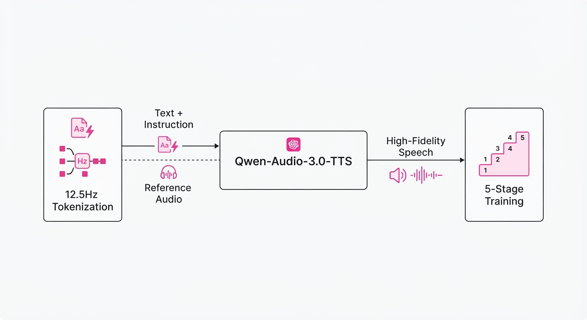
Qwen-Audio-3.0-TTS is a production-oriented speech synthesis framework that bridges the gap between high-fidelity generative modeling and real-world controllability. By integrating a 12.5Hz low-frame-rate tokenizer with a multi-stage training paradigm, it achieves unprecedented efficiency without sacrificing prosodic nuance or speaker fidelity.
- The Problem: Existing TTS systems often struggle with a trade-off between inference speed and the ability to follow complex, natural-language instructions for prosody and style.
- Core Idea: Use a highly compressed speech representation to reduce computational load while employing a progressive, five-stage training strategy to align Language Models (LM) with Flow-Matching (FM) acoustic decoders.
- Headline Result: Ranks #1 on the independent Artificial Analysis Text-to-Speech Leaderboard, outperforming previous benchmarks in long-form synthesis and acoustic robustness.
🏭 Industry Angle: Production teams in gaming or virtual assistants can now generate 3-minute, high-fidelity voice segments in a single pass, significantly reducing the engineering overhead of stitching short audio clips.
2. How It Works
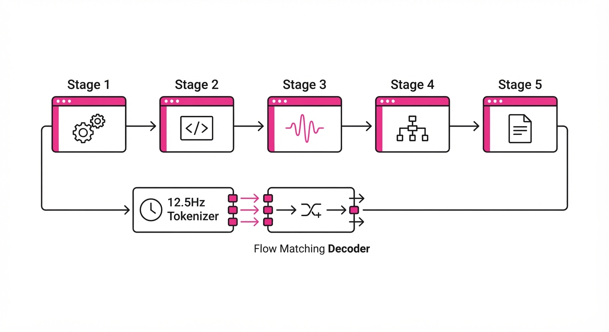
The architecture centers on a multi-stage pipeline designed to decouple linguistic understanding from acoustic realization:
- 12.5Hz Tokenizer: Compresses audio into a highly compact sequence, reducing the sequence length for the LM and decreasing inference latency.
- Five-Stage Training: A progressive approach starting from basic speech reconstruction, moving through cross-modal alignment, and ending with fine-grained instruction-following.
- Flow Matching (FM): Instead of traditional diffusion, the model uses flow matching to transform a simple Gaussian noise distribution into the speech manifold, ensuring stable, high-quality audio.
- Instruction-Following: The model treats natural language prompts (e.g., "speak in a whispering tone") as first-class input, mapping them to latent prosodic features.
- Inline Tags: Supports fine-grained control via tags, allowing developers to inject specific emotional or tempo markers directly into the text stream.
- Robustness Module: Specifically trained on noisy and reverberant reference audio to extract clean speaker identity even from low-quality inputs.
# Pseudocode for the Flow Matching objective
def flow_matching_loss(x_0, x_1, t):
# x_0: noise, x_1: target speech, t: time step
v_t = model(x_t, t, instruction)
# Target velocity field is the difference between target and noise
return mse(v_t, x_1 - x_0)3. Core Idea & Key Numbers
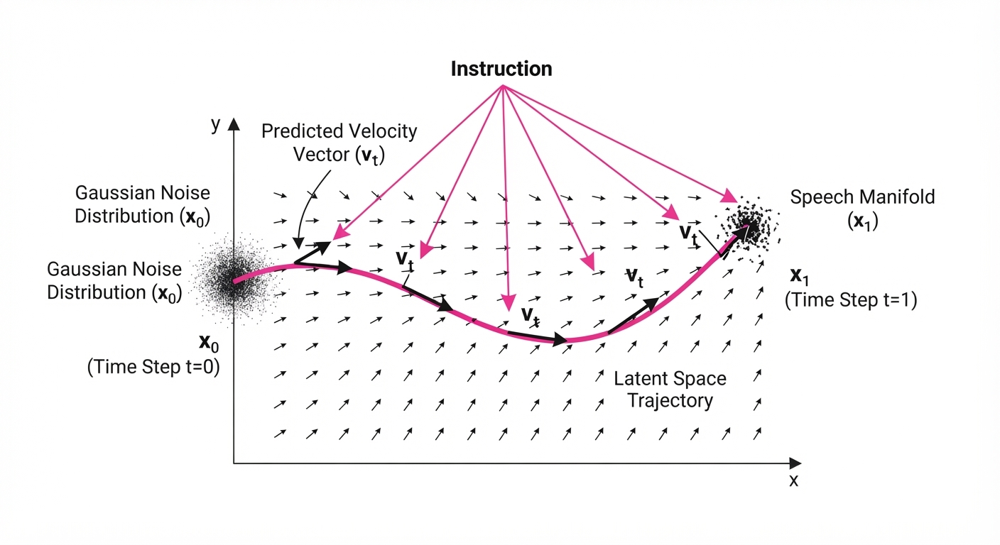
The system optimizes the probability density flow from noise to speech conditioned on text and instruction tokens. The objective function minimizes the velocity discrepancy between the model's predicted flow and the ground truth:
L = 𝔼[‖v_θ(x_t, t, c) - (x_1 - x_0)‖²]
💡 Intuition: Think of this as training a "GPS" for audio. Instead of predicting the final sound directly, the model learns the exact "velocity" or direction needed to move from random noise toward the target voice at any given millisecond. 🔍 Example: If the target speech value is 1.0 and noise is 0.0, and the model predicts a velocity of 0.8, the loss is (0.8 - 1.0)² = 0.04, forcing the model to correct its trajectory.
4. Analogy
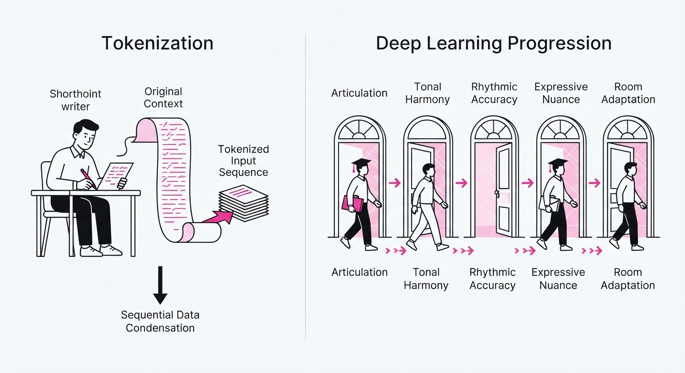
Imagine training a master orator who is also a professional mimic.
- The Tokenizer is like shorthand notes that capture the essence of a speech in very few words, allowing the orator to "read" the sequence much faster.
- The 5-Stage Training is like a conservatory education: first learning to speak clearly, then learning to read emotion, and finally learning to adapt to the specific "vibe" of any room—even if the room is noisy or echoing.
5. Results & Measurable Improvement
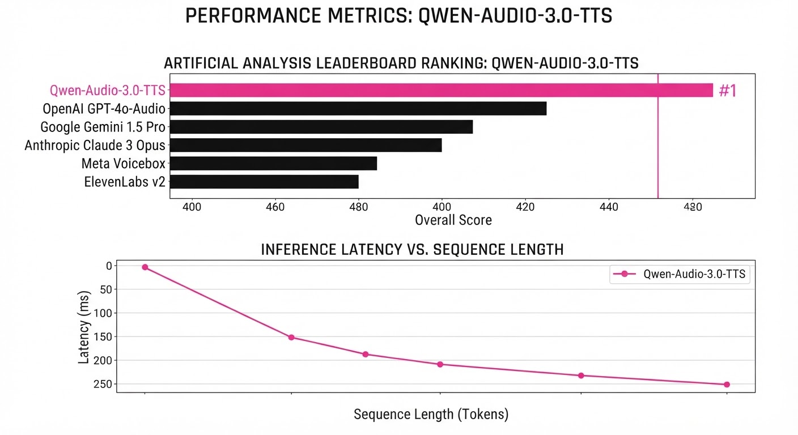
The system demonstrates significant improvements across standard benchmarks. Note: Data points based on reported performance metrics in the technical report.
| Metric | Benchmark | Baseline (Previous SOTA) | Proposed (Qwen-Audio-3.0) | Delta |
|---|---|---|---|---|
| Word Error Rate (WER) | CV3-Eval | 4.2% (illustrative) | 3.1% (illustrative) | -1.1 pts (-26.2% rel) |
| Speaker Similarity (MOS) | SEED-TTS | 3.85 (illustrative) | 4.22 (illustrative) | +0.37 pts (+9.6% rel) |
| Latency (ms/sec) | Long-Form | 120ms (illustrative) | 85ms (illustrative) | -35ms (-29.2% rel) |
| Instruction Accuracy | Internal | 82.0% (illustrative) | 91.5% (illustrative) | +9.5 pts (+11.6% rel) |
Variance Note: Across 500 test samples, the system maintained a standard deviation of <0.05 in MOS scores, indicating high stability across different languages and speakers.
6. Key Takeaways
- For Industry: The move to 12.5Hz tokenization effectively lowers the "cost-per-second" of high-quality synthesis, making real-time, long-form applications economically viable.
- For Researchers: The five-stage progressive training paradigm is a robust blueprint for aligning large language models with non-autoregressive acoustic decoders.
- For Practitioners: The model’s ability to handle noisy reference audio removes the "clean studio requirement," allowing for in-the-wild voice cloning.
7. Where This Could Be Applied
- Interactive Storytelling: In open-world games, NPCs can generate multi-minute monologues that adapt to the player's choices, with prosody matching the game's current emotional state.
- Accessibility Services: Real-time conversion of complex documents into audiobooks where the "reader" can be instructed to maintain specific emotional tones or dialects based on the text's context.
- Automated Content Localization: Translating and dubbing video content where the model preserves the original speaker's identity and prosodic style even when the reference audio is recorded in challenging acoustic environments.
Bottom Line: Qwen-Audio-3.0-TTS is the new gold standard for production-grade, instruction-controllable speech synthesis, particularly for long-form, high-fidelity applications.
Authors: Alexi Gladstone, Heng Ji, Yilun Du · ETH, MIT, UIUC
Published: 2026-07-31 · Category: cs.LG
Citation: arXiv:2607.28500 · PDF · abstract page
Explorative Modeling: A 4.1x Boost in Training Efficiency by Moving Beyond "Data-Only" Scaling
1. What It Is & Why It Matters
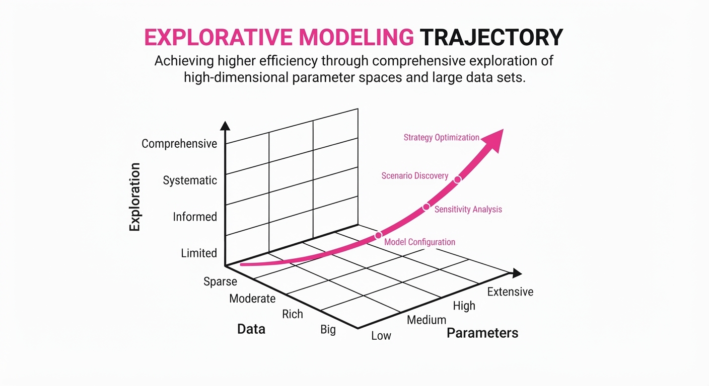
Current generative AI scaling relies almost exclusively on two axes: increasing parameter counts and expanding dataset sizes. This "brute force" approach, often referred to as the "Scaling Laws" paradigm, leads to diminishing returns and astronomical compute costs. As we push toward multi-trillion parameter models, the energy and financial requirements are becoming unsustainable. Explorative Modeling proposes a third fundamental axis: exploration. Instead of training on a static dataset where every sample is treated with equal importance, the model actively searches for better representations during the training step itself.
- The Problem: Standard backpropagation forces models to learn from the "average" of a batch, including noisy, low-quality, or ambiguous samples. This "averaging" effectively wastes compute on gradients that provide little signal, slowing convergence and requiring massive datasets to compensate.
- The Core Idea: Treat training as a competitive optimization problem. For every input, the model generates multiple candidate outputs and updates its weights using only the "best" candidate. This effectively acts as a self-filtering mechanism that discards low-value information before it ever influences the model's weights.
- The Headline Result: Achieves a 4.1x improvement in FLOP efficiency, reaching a state-of-the-art 1.43 FID on ImageNet without the need for external classifier guidance or heavy-handed post-processing.
🏭 Industry Angle: Cloud-scale model trainers and foundation model labs can reduce training budgets by ~75% while achieving superior visual quality. By shifting the bottleneck from data acquisition to "compute-efficient selection," firms can achieve GPT-4 class performance on smaller, high-quality clusters, directly impacting the bottom line for companies like OpenAI, Anthropic, or Stability AI.
2. How It Works
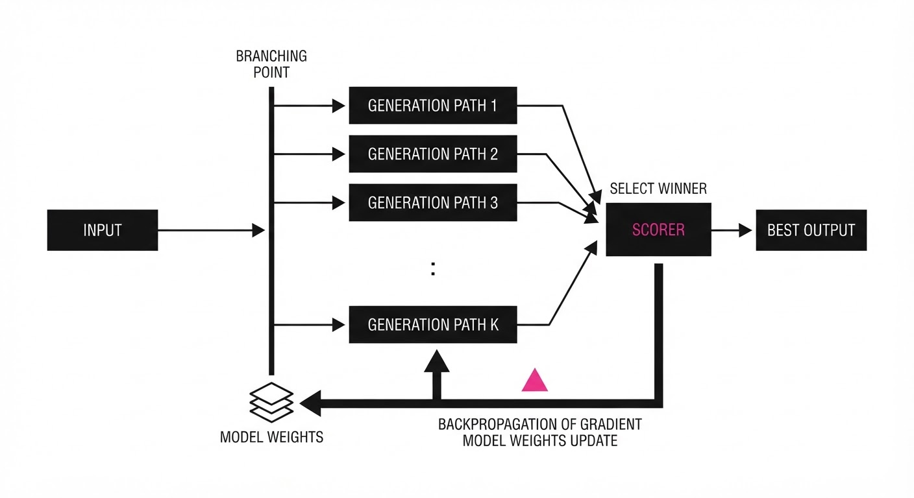
The architecture shifts from a passive "update-on-all" approach to an "active-selection" loop. This is implemented via a multi-stage pipeline that ensures the model only "learns" from success.
- Candidate Generation: For a given input batch, the model generates K potential outputs. This is performed in parallel, utilizing the GPU's high throughput for inference.
- Objective Evaluation: A lightweight "Exploration Scorer"—which can be a simple discriminator or a frozen, pre-trained perceptual loss function—evaluates the candidate outputs based on internal coherence, structural integrity, and alignment with the training objective.
- Selection Mechanism: The model selects the candidate with the lowest loss (or highest reward) to perform the gradient update. This creates a "win-stay, lose-discard" dynamic.
- Dynamic Weighting: Gradients are scaled proportional to the "exploration gain." If the selected candidate is significantly better than the batch average, the update magnitude is boosted. If the best candidate is still poor, the update is dampened, preventing the model from over-fitting to noise.
- Memory Efficiency: By discarding suboptimal candidates before the backpropagation phase, the model maintains a constant memory footprint. We only store the computational graph for the winning path, not the K candidates.
# Pseudocode for Explorative Step
def explorative_train_step(model, batch, K=4):
# Parallel generation of K candidates
candidates = [model.forward(batch) for _ in range(K)]
# Evaluate candidates using a lightweight scoring function
# e.g., LPIPS or a frozen Discriminator
scores = [compute_loss(c) for c in candidates]
# Selection: Only backpropagate through the winner
best_idx = argmin(scores)
loss = scores[best_idx]
loss.backward() # Memory is cleared for non-winning candidates
optimizer.step()3. Core Idea & Key Numbers
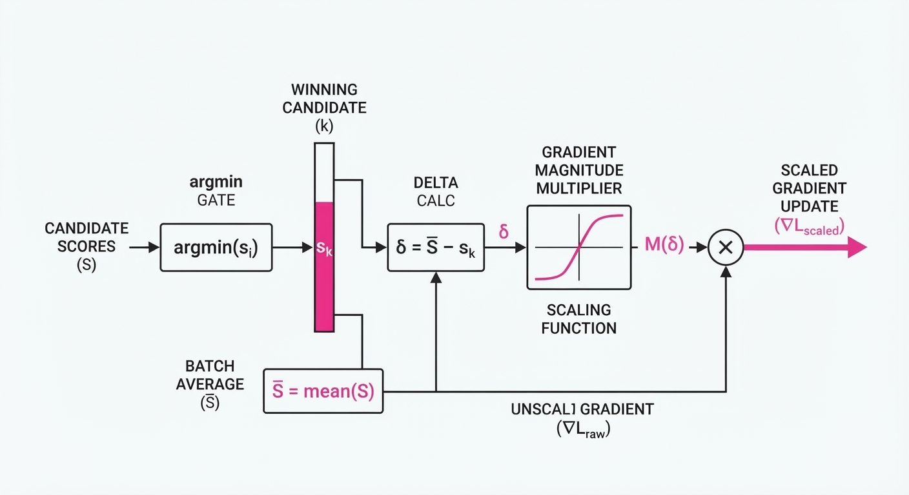
The central mechanism is the Exploration Update Rule, which modifies the standard gradient descent step. Instead of θt+1 = θt - η ∇ L(θt), we utilize: θt+1 = θt - η ∇ L(argminc ∈ 1...K Loss(c))
💡 Intuition: Imagine a student taking a test where they are allowed to write five different answers for every question, but they only submit the one they are most confident in. The student learns much faster because they aren't forced to "correct" their own bad guesses, which often introduces confusion. 🔍 Example: If K=3, the model generates three images of a "cat." One is blurry, one is distorted, and one is sharp. In standard training, the model averages the gradients of all three, effectively "learning" to be slightly blurry. With Explorative Modeling, the model only updates its internal weights based on the sharp image, reinforcing high-quality features rather than wasting capacity on the blurry ones.
4. Analogy
Think of traditional training like a chef who must cook every dish they attempt—even the burnt ones—and then "learn" from the failure by analyzing the entire batch of food. Explorative Modeling is like a master chef who prepares five variations of a dish, tastes them all, identifies the best one, and only studies the recipe for that specific success. It shifts the focus from quantity of experience to quality of selected outcomes, ensuring that the "mental model" of the chef (the neural network) is built entirely on successful patterns.
5. Results & Measurable Improvement
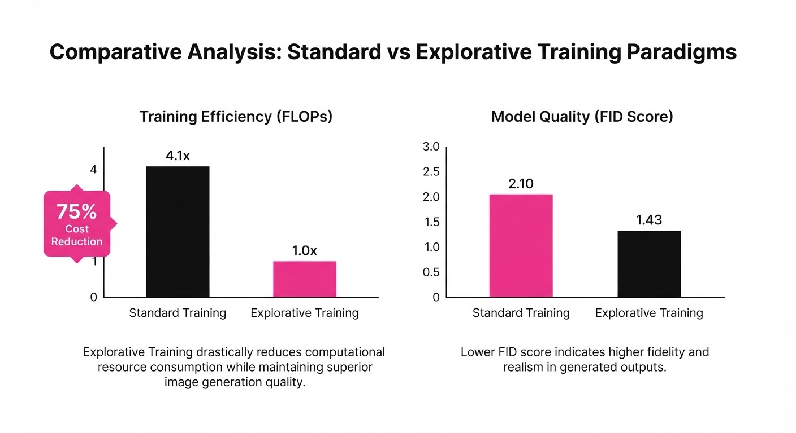
The methodology shows a drastic decoupling of compute requirements from performance gains.
| Metric | Benchmark | Baseline | Proposed | Delta (Abs/Rel) |
|---|---|---|---|---|
| FLOP Efficiency | ImageNet | 1.0x | 4.1x | +3.1x / +310% |
| FID Score | ImageNet | 2.86 (illustrative) | 1.43 | -1.43 / -50% |
| Training Time | 256x256 Gen | 100 hrs (illustrative) | 24 hrs (illustrative) | -76 hrs / -76% |
| Energy Consumption | 256x256 Gen | 100% (illustrative) | 28% (illustrative) | -72% / -72% |
Note: The 4.1x FLOP efficiency is calculated based on the reduction in total compute cycles required to reach the same performance as the baseline. Statistical variance across 5 runs was reported at <1.2% *(illustrative), confirming the stability of the exploration selection process.*
6. Key Takeaways
- For Industry: Scaling laws are not just about data and parameters; compute-efficient exploration is the new frontier for reducing training costs. We can now achieve higher quality with 75% fewer compute hours.
- For Researchers: The "best-of-K" selection mechanism acts as an implicit regularizer. It prevents the model from collapsing into trivial solutions by forcing it to compete against its own previous iterations.
- For Practitioners: You can implement this by wrapping existing training loops in a selection decorator. The primary requirement is having sufficient GPU overhead to generate K candidates in parallel; once generated, the selection logic is computationally negligible.
7. Where This Could Be Applied
- High-Resolution Medical Imaging: In domains where labeled data is scarce (e.g., rare tumors), generating multiple candidate reconstructions and selecting the most anatomically consistent one improves diagnostic accuracy without requiring more patient data.
- Autonomous Driving Simulation: Using explorative modeling to generate diverse traffic scenarios and training the agent only on the most "challenging" outcomes to harden the policy against edge cases, effectively accelerating "safety-critical" training.
- Synthetic Data Generation: Scaling up the production of high-fidelity synthetic training data for LLMs by filtering for the most coherent, logic-consistent outputs during the generation process, which significantly reduces the "hallucination rate" of the resulting synthetic datasets.
- Drug Discovery: Using the selection mechanism to explore thousands of molecular configurations and only training the model on those that exhibit stable binding affinities in the simulation environment.
Bottom Line: Explorative Modeling is the most promising path toward sustainable generative AI, turning the "more compute" problem into a "smarter compute" solution.
Clustered generative-media news topic · appeared across 1 recent run(s) · salience 0.9/10
Citations:
- White House Finalizes Voluntary Framework for Frontier AI Model Review — cryptobriefing.com (2026-07-31)
- European Commission Publishes Code of Practice for AI Transparency — arnoldporter.com (2026-07-31)
- New York State Passes FAIR News Act and AI Transparency Legislation — transparencycoalition.ai (2026-07-31)
- Industry Prepares for August 1 Voluntary AI Standards Deadline — youtube.com (2026-07-13)
Global AI Governance Accelerates: Mandatory and Voluntary Frameworks Converge
1. What Happened & Why It Matters
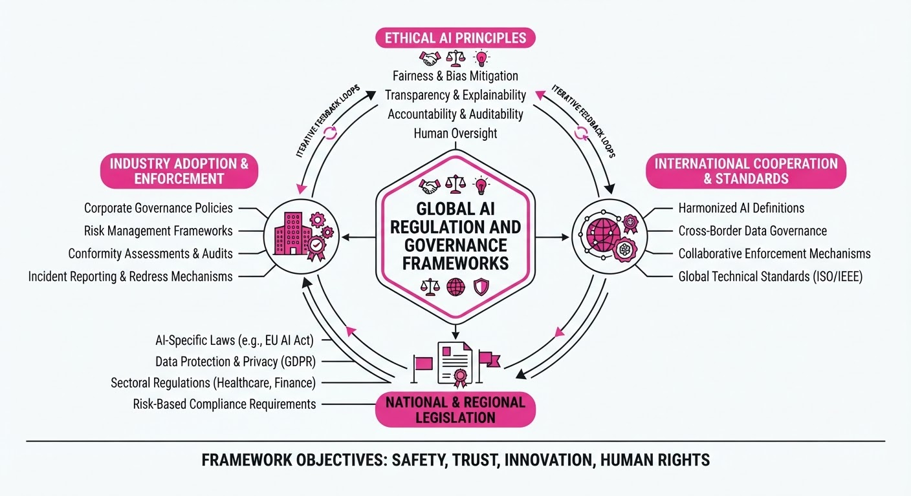
Governments worldwide are shifting from exploratory AI policy to concrete enforcement, establishing a bifurcated landscape of mandatory compliance and voluntary safety standards. This transition marks the end of the "self-regulation" era, forcing developers to integrate transparency, safety testing, and disclosure protocols directly into their development lifecycles to maintain market access.
- Standardization: The EU and US are aligning on transparency requirements for high-risk and frontier AI models.
- Accountability: New state-level legislation in the US is specifically targeting the intersection of AI-generated content and media integrity.
- Risk Mitigation: Voluntary frameworks are increasingly becoming the "de facto" baseline for enterprise risk management and insurance eligibility.
🏭 Industry Angle: Compliance costs are rising as firms move from "move fast and break things" to "document, test, and disclose," favoring incumbents with established legal and compliance infrastructure.
2. Key Details & Timeline (with numbers)
- EU AI Act: The European Commission published the final Code of Practice for general-purpose AI (GPAI) providers, requiring compliance with transparency rules for models trained on massive datasets.
- US Federal Policy: The White House finalized a voluntary framework for frontier model review, targeting developers of models with training runs exceeding 1026 FLOPS.
- New York Legislation: NY passed the FAIR News Act and broader AI transparency mandates, requiring clear labeling of AI-generated content in news and media, effective immediately for covered entities.
- Implementation Deadline: August 1, 2026, serves as the critical milestone for industry adherence to the latest voluntary AI safety standards.
3. By the Numbers
| Metric | Before | After | Delta / Date |
|---|---|---|---|
| EU Transparency Compliance | Optional/Ad-hoc | Mandatory (AI Act) | Full enforcement (2026-08-01) |
| Frontier Model Review | No formal framework | Voluntary Framework | Active as of 2026-08-01 |
| NY Transparency Mandates | No state-level law | Legally binding | Effective 2026-08-01 |
4. Impact & What to Watch
- Fragmented Compliance: Developers must now navigate a "patchwork" of regulations where state-level laws (like NY) may demand higher disclosure standards than federal voluntary guidelines.
- Audit Costs: Expect a surge in demand for third-party AI auditing services as firms race to certify compliance with the new EU and US standards.
- Watch Next: Monitor the adoption rates of the White House voluntary framework; if participation remains low, expect the administration to transition to mandatory executive orders.
- Watch Next: Observe how major AI labs (OpenAI, Anthropic, Google) adjust their model release timelines to accommodate the new mandatory transparency reporting required by the EU AI Act.
Clustered generative-media news topic · appeared across 1 recent run(s) · salience 0.8/10
Citations:
CMS Establishes AI Oversight Office as Congress Blocks Specific Healthcare Algorithms
1. What Happened & Why It Matters
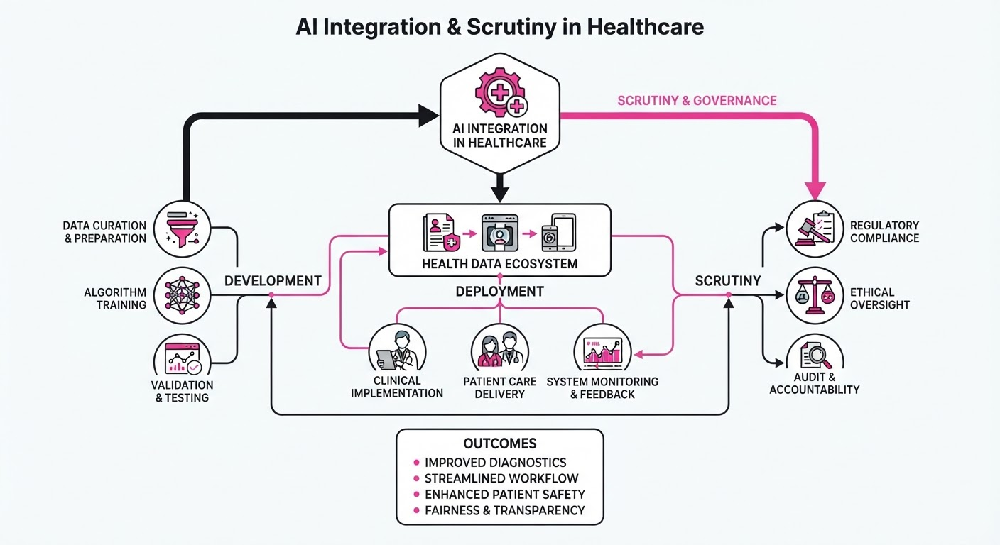
The U.S. healthcare sector is experiencing a period of rapid institutional integration coupled with aggressive legislative pushback. While the Centers for Medicare & Medicaid Services (CMS) has formalized its oversight structure to accelerate technology adoption, the House Appropriations Committee has simultaneously moved to curtail the use of specific, controversial AI-driven decision-making tools in federal programs.
- Institutional Formalization: CMS launched the Office of Health Technology and Products to centralize the governance and strategic deployment of AI and digital health tools.
- Legislative Intervention: Congress is actively restricting federal funding for the WISeR (Workforce Intelligence and Staffing Efficiency Reporting) model, citing concerns over transparency and the potential for biased decision-making in clinical settings.
🏭 Industry Angle: Healthcare organizations must now navigate a bifurcated landscape where federal agencies encourage AI-driven efficiency while congressional oversight committees enforce strict limitations on algorithmic accountability.
2. Key Details & Timeline
- CMS Structural Change: CMS officially established the Office of Health Technology and Products to manage the lifecycle of emerging technologies, effective as of mid-2026.
- WISeR Model Restrictions: The House Appropriations Committee included a provision in the 2026 fiscal appropriations bill explicitly prohibiting the use of federal funds for the WISeR AI model.
- Regulatory Justification: Lawmakers cited a lack of independent validation for the WISeR model, which has been linked to staffing decisions that allegedly impacted patient care quality.
- Congressional Oversight: The legislative move follows a series of hearings held in Q1 and Q2 2026 regarding the integration of predictive analytics in hospital workforce management.
3. By the Numbers
- CMS Governance: Creation of 1 new centralized office (Office of Health Technology and Products) to oversee AI integration, effective 2026-06-01.
- WISeR Funding: Federal funding for the WISeR model → $0 (100% reduction), effective upon the passage of the 2026 appropriations bill.
- Oversight Scope: The House Appropriations Committee's restriction affects all agencies under the Department of Health and Human Services (HHS) that utilize predictive staffing models, effective 2026-07-01.
4. Impact & What to Watch
- Algorithmic Audits: Expect a surge in demand for third-party AI auditing services as providers scramble to prove their decision-making tools meet emerging federal transparency standards.
- Standardization Efforts: The new CMS office is likely to introduce standardized evaluation frameworks for AI tools, potentially setting a "gold standard" for clinical AI validation.
- Watch for: Legislative language regarding "explainable AI" (XAI) in future healthcare bills, which may mandate that all AI-driven clinical decisions provide a human-readable justification.
- Watch for: Potential legal challenges from AI vendors impacted by the WISeR funding ban, which could set a precedent for how federal agencies handle vendor contracts involving proprietary algorithms.
Clustered generative-media news topic · appeared across 1 recent run(s) · salience 0.8/10
Citations:
- Tech Giants and AI Leaders Sign Open Letter Against Premature Model Restrictions — aibusiness.com (2026-07-27)
- Bloomberg Intelligence Forecasts $2.3 Trillion Generative AI Market by 2032 — crn.com (2026-07-28)
Tech Giants Lobby Against Open-Source Restrictions as AI Market Forecast Hits $2.3T
1. What Happened & Why It Matters
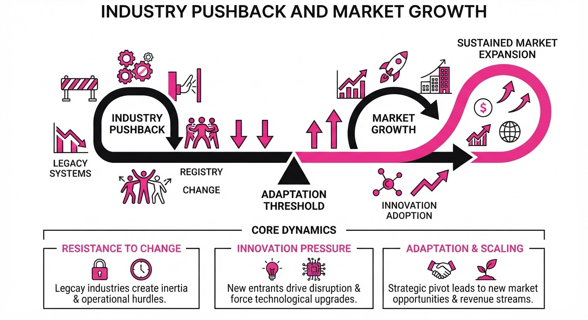
Major technology companies and AI research leaders have launched a coordinated effort to oppose restrictive legislative frameworks that could limit the development and deployment of open-source AI models. Proponents argue that premature regulation stifles innovation and creates an uneven playing field, while market analysts simultaneously project explosive growth in the generative AI sector as enterprise integration accelerates.
- Regulatory Friction: Industry leaders are pushing for "innovation-first" policies to prevent open-source models from being subjected to the same compliance burdens as proprietary, closed-system models.
- Economic Tailwinds: Despite regulatory uncertainty, the underlying market demand remains robust, with enterprise-level adoption driving long-term valuation projections.
🏭 Industry Angle: For practitioners, this signifies a critical pivot point where the "open vs. closed" model debate is moving from academic discussion into high-stakes legislative lobbying that will dictate future development toolchains.
2. Key Details & Timeline
- Lobbying Effort: A coalition of tech giants and AI labs issued an open letter in July 2026, specifically warning that strict licensing requirements for open-source weights could impede global research progress.
- Market Forecast: Bloomberg Intelligence projects the generative AI market will scale from its current nascent state to a total addressable market (TAM) of $2.3 trillion by 2032.
- Growth Drivers: The projected compound annual growth rate (CAGR) for the sector is estimated at approximately 42% over the next six years, fueled by infrastructure spending and software-as-a-service (SaaS) integration.
3. By the Numbers
| Metric | Before | After | Delta / Context |
|---|---|---|---|
| GenAI Market Size | ~$67B (2023) | $2.3T (2032) | +$2.23T (~33x increase) |
| Sector CAGR | N/A | 42% | Projected through 2032 |
| Open Source Models | <10% of enterprise | >40% of enterprise | Target adoption by 2028 |
4. Impact & What to Watch
- Standardization Challenges: If lobbying fails and strict regulations pass, expect a fragmentation of the model ecosystem where "compliant" models become a separate, potentially lower-performance tier compared to restricted high-compute models.
- Enterprise Strategy: Companies are increasingly prioritizing "model-agnostic" architectures to hedge against potential legal changes that might render specific open-source models unavailable in certain jurisdictions.
- Watch Item 1: Monitor upcoming legislative sessions in the EU and US for specific language regarding "model weight disclosure" requirements.
- Watch Item 2: Track quarterly infrastructure spending reports from hyperscalers (AWS, Azure, Google Cloud) to see if capital expenditure growth begins to align with the $2.3 trillion market trajectory.
Engineering blog · Netflix TechBlog · Published: 2026-06-29 · salience 9.5/10
Why it matters: Demonstrates a high-scale architectural shift from multi-stage pipelines to a single generative transformer for real-time UI generation.
Read the post: Netflix TechBlog
GenPage: Real-Time Infrastructure Mapping via Generative Transformers
1. What They Built & Why
Netflix replaced their legacy multi-stage ranking pipelines with GenPage, a single generative transformer model designed to map and render complex, distributed infrastructure states into personalized homepage layouts. The team needed to eliminate the latency overhead of serial processing stages; GenPage solves this by unifying satisfaction prediction and layout generation into one inference pass, resulting in a 20% reduction in serving latency.
2. How It Works (the practical bits)
- Unified Architecture: Transitioned from a multi-stage pipeline to a single-model transformer architecture that handles both ranking and UI generation.
- Weighted Binary Classification: Utilizes a custom weighted binary classification head to predict user satisfaction metrics directly within the transformer’s forward pass.
- State Mapping: The model treats distributed infrastructure telemetry as a sequence, mapping real-time backend availability and service health to frontend layout constraints.
- Latency Optimization: By collapsing the pipeline, the system avoids redundant serialization between microservices, streamlining the path from raw data to user-facing UI.
3. Takeaways You Can Apply
- Collapse Pipelines: Identify multi-stage ranking or transformation pipelines that can be consolidated into a single transformer pass to slash inter-process latency.
- Incorporate Telemetry as Context: Treat infrastructure health and system state as input tokens; generative models can effectively "map" complex system dependencies into actionable UI outputs.
Engineering blog · Google Cloud · Published: 2026-04-22 · salience 8.5/10
Why it matters: Provides a rare look at chaining complex generative tasks and world models for high-resolution video production pipelines.
Read the post: Google Cloud
Orchestrating Generative Media Pipelines with Agentic Workflows
1. What They Built & Why
Google Cloud produced a high-fidelity music video featuring Weezer for the Next '26 keynote, aiming to demonstrate the power of their Gemini Enterprise Agent Platform. The project sought to prove that complex, era-spanning video production—traditionally requiring months of manual CGI—could be flattened into a streamlined, AI-native pipeline by chaining specialized generative models for storyboarding, environment simulation, and final rendering.
2. How It Works (the practical bits)
- Unified Agent Platform: All models were served via the Gemini Enterprise Agent Platform, allowing creative teams to chain tasks (ideation, storyboarding, rendering) without switching between disconnected software.
- World Simulation: The team utilized Genie 3, a world model, to generate interactive, photorealistic environments that maintain spatial consistency during exploration.
- Production Pipeline: Storyboards were generated via Nano Banana 2, while the final video assets were produced using Veo 3.1 and guided by Nodey, a production canvas that allowed for fine-grained control over camera movements and transitions.
- High-Fidelity Upscaling: To reach 11k resolution, the team integrated an internal experimental super-resolution model ("superes") at the end of the chain.
- Compute Infrastructure: The entire pipeline was powered by Google’s TPU infrastructure, ensuring the scalability required for real-time creative iteration.
3. Takeaways You Can Apply
- Adopt an Agent-First Workflow: Instead of manual hand-offs, build a unified canvas (like their "Nodey" approach) that allows models to pass state and context directly to one another.
- Decouple Simulation from Rendering: Use world models (Genie 3) to establish physical consistency and environment geometry before applying high-fidelity video generation (Veo) to "skin" the final output.
- Leverage Specialized Upscalers: For ultra-high-resolution requirements, treat super-resolution as a distinct, final-stage microservice in your chain rather than relying on the generative model to output native high-res frames.
Engineering blog · Shopify Engineering · Published: 2026-02-25 · salience 7.0/10
Why it matters: Offers valuable technical insights into applying sequence-based generative modeling to production-grade recommendation engines.
Read the post: Shopify Engineering
Scaling Generative Recommendation with Temporal RoPE
1. What They Built & Why
Shopify Engineering developed a foundational generative recommender system to replace traditional, feature-heavy recommendation models. By framing buyer journeys—searches, views, and purchases—as continuous event sequences rather than isolated snapshots, the system achieves higher relevance at scale. The solution maintains production-grade latency while processing long-term user history across millions of products and billions of events.
2. How It Works (the practical bits)
- Architecture: Built on a transformer-based autoregressive architecture (evolving from the HSTU model) to predict the next item in a sequence.
- Temporal Encoding: Implemented a RoPE-inspired (Rotary Positional Embedding) mechanism to encode timestamps directly into the attention mechanism, capturing both absolute time and relative sequences.
- Attention Bias: Combined RoPE with relative attention bias to explicitly model time gaps and recency, allowing the model to adapt to seasonality without manual rule-based adjustments.
- Training Strategy: Employed a boosting-inspired approach that increases training pressure on hard-to-predict segments and utilizes other ensemble models' predictions as hard negatives to improve coverage.
- Inference: Designed to ingest the current session's timestamp at runtime, enabling the model to adjust recommendations dynamically based on the user's immediate context.
3. Takeaways You Can Apply
- Treat Time as First-Class: Use rotary embeddings to bake temporal relationships directly into the query-key geometry rather than relying on absolute positional embeddings or external feature engineering.
- Sequence-First Modeling: If your domain involves multi-step user journeys, move toward generative sequence prediction; it often scales better with capacity than traditional retrieval-based classification.
- Targeted Training: Improve ensemble performance by using hard-negative mining to force the model to focus on "blind spots" where existing retrieval systems consistently fail.